Chapter 2: Framing Democracy
Online Appendix
Load libraries
library(lubridate)##
## Attaching package: 'lubridate'## The following object is masked from 'package:base':
##
## datelibrary(ggplot2)
library(dplyr)##
## Attaching package: 'dplyr'## The following objects are masked from 'package:lubridate':
##
## intersect, setdiff, union## The following objects are masked from 'package:stats':
##
## filter, lag## The following objects are masked from 'package:base':
##
## intersect, setdiff, setequal, unionlibrary(tidytext)
library(stm)## stm v1.3.5 successfully loaded. See ?stm for help.
## Papers, resources, and other materials at structuraltopicmodel.comlibrary(stminsights)Load and process the text data.
#load all articles with keyword "democracy"
all_news <- readRDS("data/democracy_news.RDS")
# save legit stopwords, and add some
stopwords <- tibble(
tokens = stopwords::stopwords("ko", source = "stopwords-iso"),
lexicon = "stopwords-iso")
stopwords <- stopwords %>%
add_row(tokens = c("들이", "하기", "그것", "때문"),
lexicon = "stopwords-iso")
# make tidytext format of the data and remove stopwords
tidy_news <- all_news %>%
dplyr::select(tokens, Newspaper, Date, Body, Prezparty) %>%
dplyr::mutate(article = row_number()) %>%
tidyr::unnest(tokens) %>%
dplyr::anti_join(stopwords) ## Joining, by = "tokens" # dplyr::filter(tokens != "민주주의")
# make term-document matrix from the tidytext format (used later for topic models)
news_sparse <- tidy_news %>%
dplyr::count(article, tokens) %>%
cast_sparse(article, tokens, n)Load the Korean sentiment lexicon.
## Parsed with column specification:
## cols(
## term = col_character()
## )
## Parsed with column specification:
## cols(
## term = col_character()
## )Count the sentiment words.
tidy_news <- tidy_news %>%
rename(word = tokens)
tidy_news %>%
inner_join(senti) %>%
count(word, sort = TRUE) ## Joining, by = "word"senti_news <- tidy_news %>%
inner_join(senti) %>%
count(Newspaper, Prezparty, sentiment) %>%
tidyr::spread(sentiment, n, fill = 0) %>%
mutate(sentiment = positive - negative)## Joining, by = "word"# pdf("neg_news.pdf", width=6, height=2)
ggplot(senti_news, aes(Prezparty, sentiment, fill = Newspaper)) +
geom_col(show.legend = FALSE) +
labs(x = "governments from 1990 to 2014") +
facet_wrap(~Newspaper, ncol = 3, scales = "free_x") +
scale_fill_grey() +
theme_bw()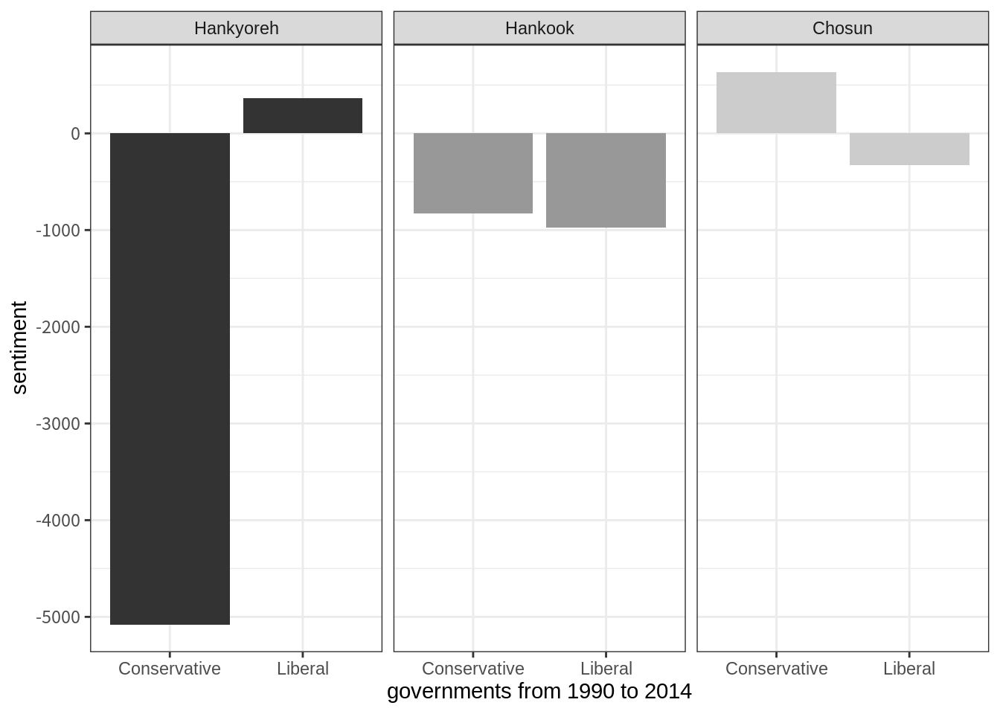
# dev.off()See the top sentiment words.
senti_word_counts <- tidy_news %>%
inner_join(senti) %>%
count(word, sentiment, sort = TRUE) %>%
ungroup()## Joining, by = "word"senti_word_countsPlot the top sentiment words.
senti_word_counts %>%
group_by(sentiment) %>%
top_n(10) %>%
ungroup() %>%
mutate(word = reorder(word, n)) %>%
ggplot(aes(word, n, fill = sentiment)) +
geom_col(show.legend = FALSE) +
facet_wrap(~sentiment, scales = "free_y") +
labs(y = "Contribution to sentiment",
x = NULL) +
coord_flip() +
scale_fill_grey() +
theme_bw()## Selecting by n
Did negativity increase in specific administrations?
senti_news_admin <- tidy_news %>%
inner_join(senti) %>%
mutate(admin = case_when(
Date > "1990-01-01" & Date < "1993-02-24" ~ "1990-1993 Roh TW",
Date > "1993-02-25" & Date < "1998-02-24" ~ "1993-1998 Kim YS",
Date > "1998-02-25" & Date < "2003-02-24" ~ "1998-2003 Kim DJ",
Date > "2003-02-25" & Date < "2008-02-24" ~ "2003-2008 Roh MH",
Date > "2008-02-25" & Date < "2013-02-24" ~ "2008-2013 Lee MB",
Date > "2013-02-25" & Date < "2017-03-10" ~ "2013-2014 Park GH"
)) %>%
filter(!is.na(admin)) %>%
count(Newspaper, admin, sentiment) %>%
tidyr::spread(sentiment, n, fill = 0) %>%
mutate(sentiment = positive - negative)## Joining, by = "word"#pdf("neg_admins.pdf", width=6, height=3)
ggplot(senti_news_admin, aes(admin, sentiment, fill = Newspaper)) +
geom_col(show.legend = FALSE, position = "stack") +
labs(x = "administrations") +
facet_wrap(~Newspaper, ncol = 3, scales = "free_y") +
scale_fill_grey() +
theme_bw() +
theme(axis.text.x = element_text(angle = 90, vjust = 0.5, hjust=1))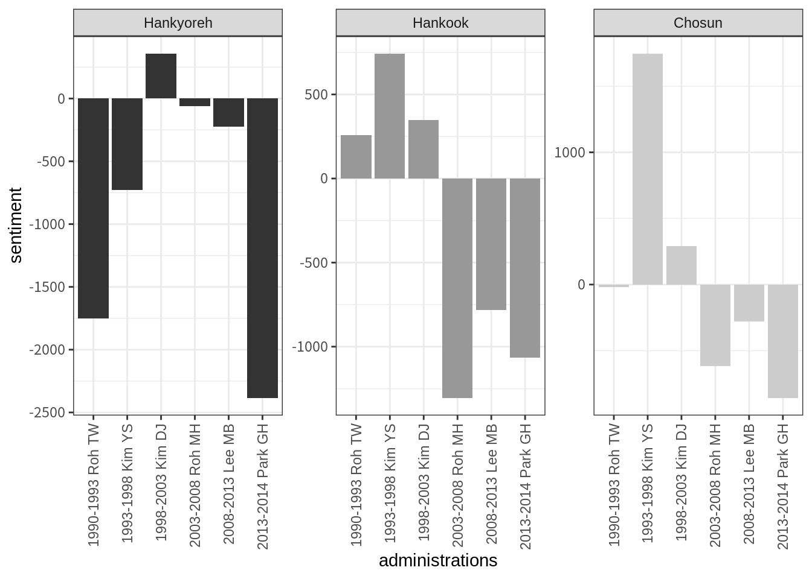
#dev.off()Plot sentiment words as stacked bars by all newspapers.
ggplot(senti_news_admin, aes(admin, sentiment, fill = Newspaper)) +
geom_col(position = "stack") +
labs(x = "administrations") +
# facet_wrap(~Newspaper, ncol = 3, scales = "free_x") +
scale_fill_grey() +
theme_bw() +
theme(axis.text.x = element_text(angle = 90, vjust = 0.5, hjust=1))
Plot the most unique sentiment words (tf-idf).
senti_words <- tidy_news %>%
inner_join(senti) %>%
mutate(admin = case_when(
Date > "1990-01-01" & Date < "1993-02-24" ~ "1990-1993 Roh TW",
Date > "1993-02-25" & Date < "1998-02-24" ~ "1993-1998 Kim YS",
Date > "1998-02-25" & Date < "2003-02-24" ~ "1998-2003 Kim DJ",
Date > "2003-02-25" & Date < "2008-02-24" ~ "2003-2008 Roh MH",
Date > "2008-02-25" & Date < "2013-02-24" ~ "2008-2013 Lee MB",
Date > "2013-02-25" & Date < "2017-03-10" ~ "2013-2014 Park GH"
)) %>%
filter(!is.na(admin)) %>%
filter(sentiment == "negative") ## Joining, by = "word"senti_words <- senti_words %>%
filter(admin %in% c("2013-2014 Park GH", "1990-1993 Roh TW")) %>%
filter(Newspaper == "Hankyoreh") %>%
group_by(admin) %>%
count(word, sort = TRUE) %>%
ungroup() %>%
bind_tf_idf(word, admin, n) %>%
arrange(desc(tf_idf)) %>%
mutate(word = factor(word, levels = rev(unique(word)))) %>%
group_by(admin) %>%
top_n(20) %>%
ungroup() ## Selecting by tf_idfsenti_words %>% count(admin)senti_words %>%
ggplot(aes(word, tf_idf, fill = admin)) +
geom_col(show.legend = FALSE) +
labs(x = NULL, y = "tf-idf") +
facet_wrap(admin~., ncol = 3, scales = "free") +
coord_flip() +
scale_fill_grey() +
theme_bw() +
theme(axis.text.x = element_text(angle = 90, vjust = 0.5, hjust=1))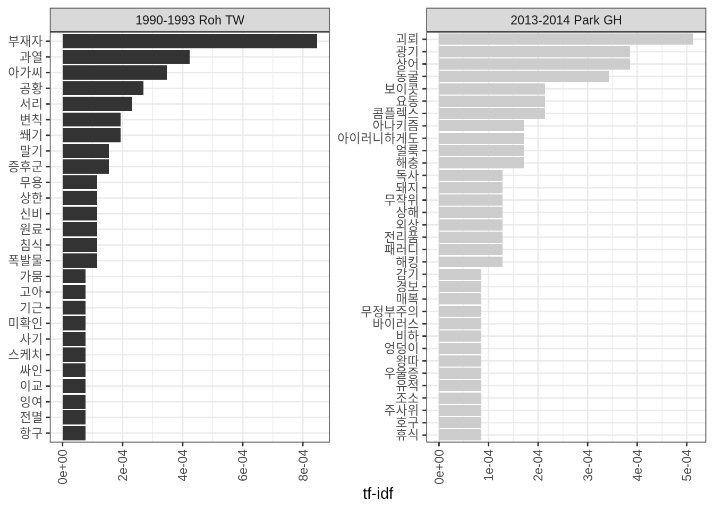
# pdf("neg_admins.pdf", width=6, height=3)
# dev.off()Let’s look at the general words, aside from the sentiment words, to get a better idea of the corpus. Create dataframe with total word counts.
news_words <- tidy_news %>%
mutate(admin = case_when(
Date > "1990-01-01" & Date < "1993-02-24" ~ "1990-1993 Roh TW",
Date > "1993-02-25" & Date < "1998-02-24" ~ "1993-1998 Kim YS",
Date > "1998-02-25" & Date < "2003-02-24" ~ "1998-2003 Kim DJ",
Date > "2003-02-25" & Date < "2008-02-24" ~ "2003-2008 Roh MH",
Date > "2008-02-25" & Date < "2013-02-24" ~ "2008-2013 Lee MB",
Date > "2013-02-25" & Date < "2017-03-10" ~ "2013-2014 Park GH"
)) %>%
count(Newspaper, admin, word, sort = TRUE)
total_words <- news_words %>%
group_by(Newspaper, admin) %>%
summarize(total = sum(n))
news_words <- left_join(news_words, total_words)## Joining, by = c("Newspaper", "admin")Show term freqency ranks.
freq_by_rank <- news_words %>%
group_by(Newspaper, admin) %>%
mutate(rank = row_number(),
`term frequency` = n/total)
freq_by_rankShow term freqency ranks for the most negative administrations.
news_words %>%
filter(Newspaper == "Hankyoreh") %>%
filter(admin %in% c("2013-2014 Park GH", "1990-1993 Roh TW")) %>%
group_by(Newspaper, admin) %>%
mutate(rank = row_number(),
`term frequency` = n/total) Which are most unique words for each Newspaper? (tf-idf)
news_words <- news_words %>%
bind_tf_idf(word, Newspaper, n)## Warning in bind_tf_idf.data.frame(., word, Newspaper, n): A value for tf_idf is negative:
## Input should have exactly one row per document-term combination.news_words %>%
select(-total) %>%
arrange(desc(tf_idf))Plot most unique words by each newspaper.
news_words %>%
arrange(desc(tf_idf)) %>%
mutate(word = factor(word, levels = rev(unique(word)))) %>%
group_by(Newspaper) %>%
top_n(15) %>%
ungroup() %>%
ggplot(aes(word, tf_idf, fill = Newspaper)) +
geom_col(show.legend = FALSE) +
labs(x = NULL, y = "tf-idf") +
facet_wrap(Newspaper~., ncol = 3, scales = "free") +
coord_flip() +
scale_fill_grey() +
theme_bw() +
theme(axis.text.x = element_text(angle = 90, vjust = 0.5, hjust=1))## Selecting by tf_idf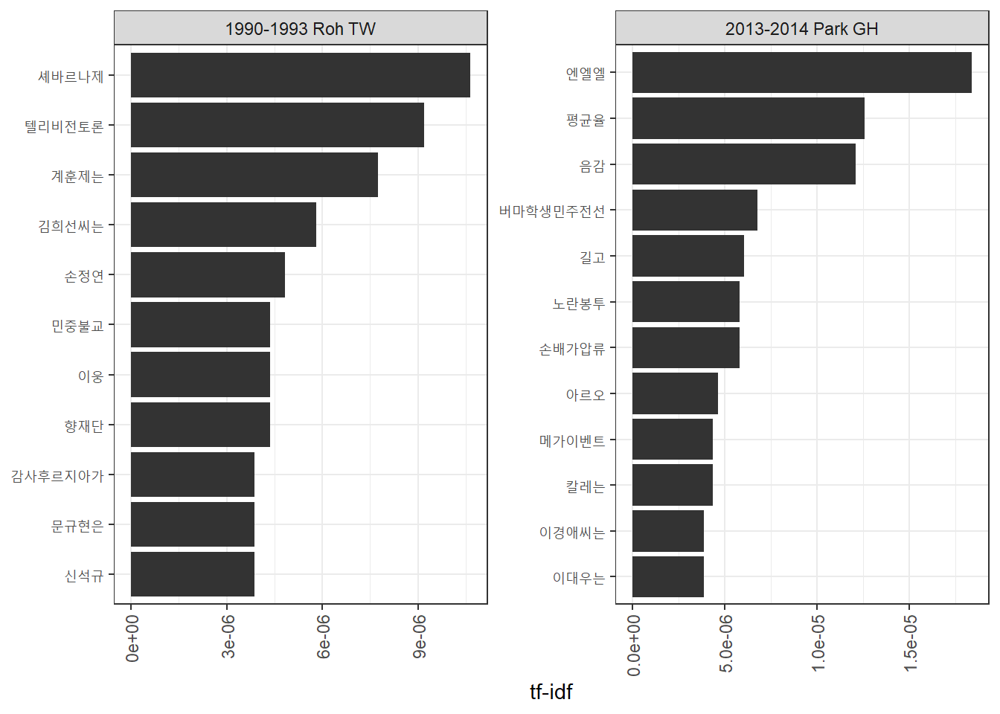
Plot most unique words by each newspaper for the two most negative administrations.
news_words %>%
arrange(desc(tf_idf)) %>%
filter(admin %in% c("2013-2014 Park GH", "1990-1993 Roh TW")) %>%
filter(Newspaper == "Hankyoreh") %>%
mutate(word = factor(word, levels = rev(unique(word)))) %>%
group_by(Newspaper) %>%
top_n(20) %>%
ungroup() %>%
ggplot(aes(word, tf_idf, fill = Newspaper)) +
geom_col(show.legend = FALSE) +
labs(x = NULL, y = "tf-idf") +
facet_wrap(admin~., ncol = 3, scales = "free") +
coord_flip() +
scale_fill_grey() +
theme_bw() +
theme(axis.text.x = element_text(angle = 90, vjust = 0.5, hjust=1))## Selecting by tf_idf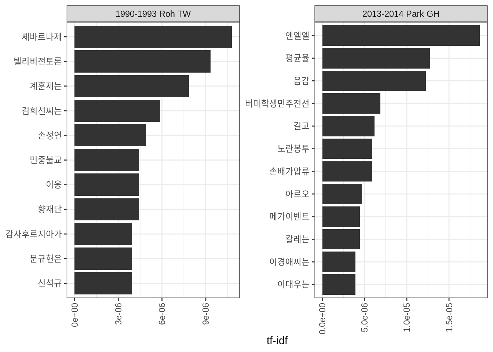
Now let’s look at dtructural topic models for emotional frames regarding democracy. I analyzed a topic model with 12 topics.
topic_model <- readRDS("data/topic_model.RDS")
# prepare covariates
covariates <- tidy_news %>%
distinct(article, Newspaper, Date, Body, Prezparty)
startdate <- as.Date("19900101", "%Y%m%d")
covariates$Date2 <- as.Date(covariates$Date, "%Y%m%d")
covariates$Days <- difftime(covariates$Date2, startdate, units="days") %>%
as.numeric()Show summary output that shows the relative proportions of topics.
plot(topic_model, type = "summary")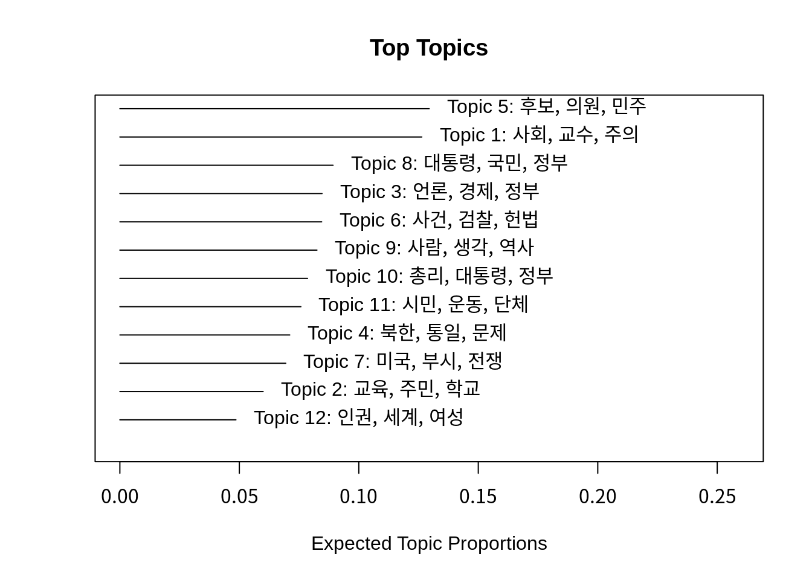
Show more words that help you to label the topics.
plot(topic_model, type = "labels")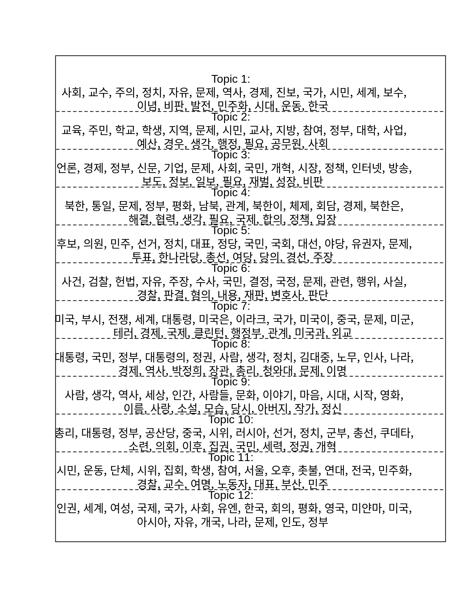
Make topic labels (these are mine):
## 1 2
## "Ideology and ideals" "Civil society, education"
## 3 4
## "Public opinion, media" "North Korea"
## 5 6
## "Party politics" "Law and prosecution"
## 7 8
## "The U.S." "Government"
## 9 10
## "Sentimental humanism" "Int'l democratizations"
## 11 12
## "Civic protest" "Global human values"Look into sample articles. 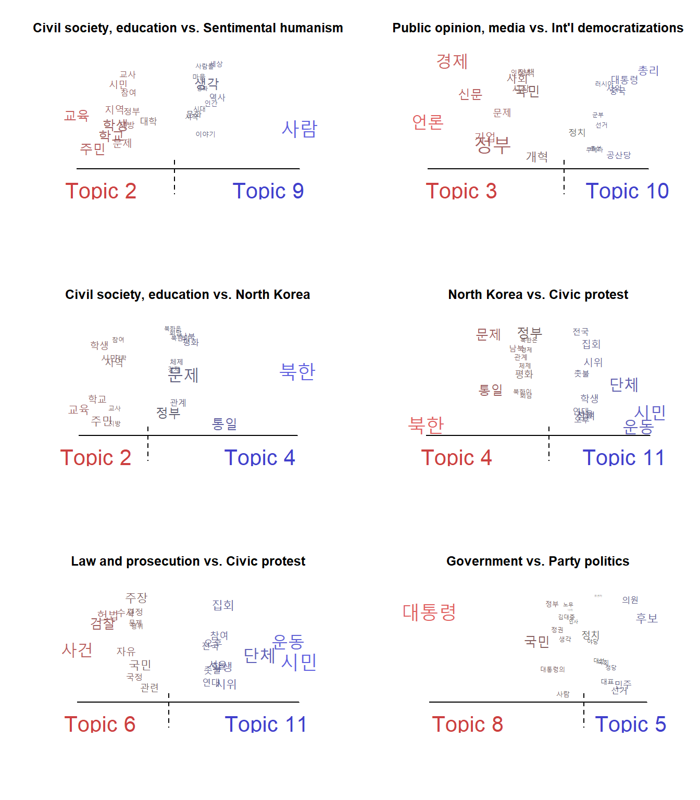
Compare which topics have a higher importance in which words (the choice of each topic pair is set below). 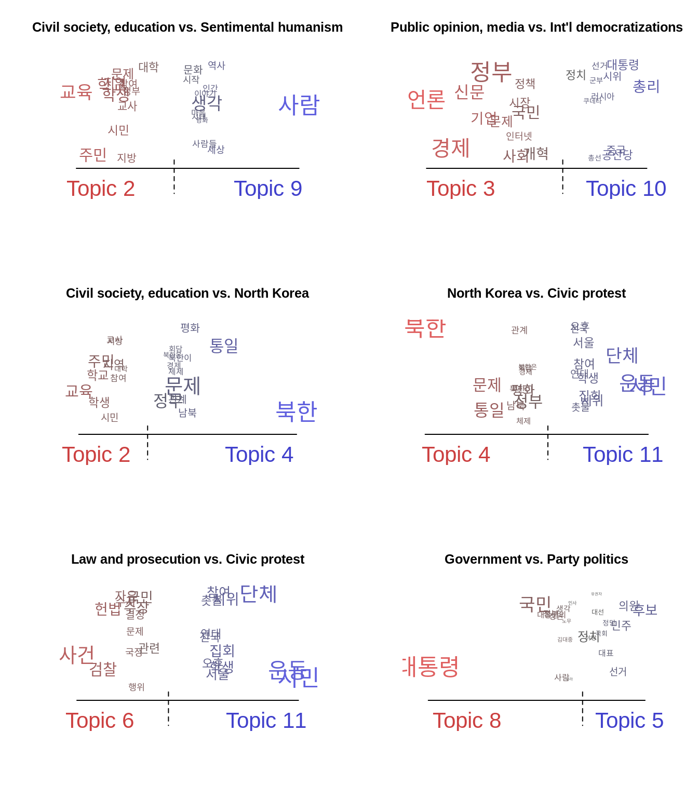
Estimate effects with smoothing line
# combine estimates for interaction effects
prep_int <- estimateEffect(1:12 ~ Newspaper * s(Days),
topic_model, covariates)Plot relationship between newspapers and topic.
# pdf("meta_cov.pdf")
par(mar=c(9,9,4,2))
plot(prep_int, covariate = "Newspaper",
topics = c(1:12), model = topic_model,
method = "difference", cov.value1 = "Chosun",
cov.value2 = "Hankyoreh",
xlab = "More like Hankyoreh ... More like Chosun",
labeltype = "custom", custom.labels = c("Ideology",
"Civil society, education",
"Public opinion, media",
"North Korea",
"Party politics",
"Law and prosecution",
"The U.S.",
"Government",
"Sentimental humanism",
"Int'l democratizations",
"Civic protest",
"Global human values"))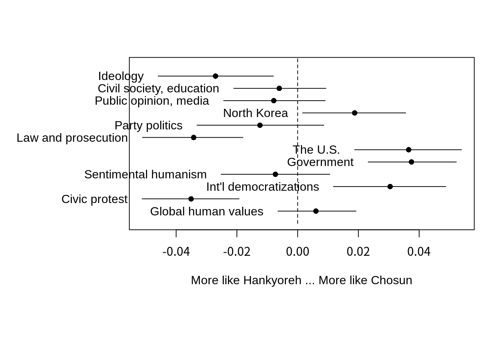
# dev.off()
# ggsave("plots/meta_cov.png", width = 6, height = 6)Estimate effects model.
# prepare dataframe with the package stm_insights
effects_int <- get_effects(estimates = prep_int,
variable = 'Days',
type = 'continuous',
moderator = 'Newspaper',
modval = "Chosun") %>%
bind_rows(get_effects(estimates = prep_int,
variable = 'Days',
type = 'continuous',
moderator = 'Newspaper',
modval = "Hankook"),
get_effects(estimates = prep_int,
variable = 'Days',
type = 'continuous',
moderator = 'Newspaper',
modval = "Hankyoreh"))
labels <- c("Chosun" = "Conservative", "Hankyoreh" = "Liberal")
yearseq <- seq(from = ymd("19900101"),
to = ymd("20141230"), by = "year")
yearnames <- year(yearseq)Plot topic prevalences by time.
# plot interaction effects
# pdf("topics_12.pdf", width = 6, height = 5)
effects_int %>%
mutate(label = case_when(
topic == 1 ~ "Ideology",
topic == 2 ~ "Civil society, education",
topic == 3 ~ "Public opinion, media",
topic == 4 ~ "North Korea",
topic == 5 ~ "Party politics",
topic == 6 ~ "Law and prosecution",
topic == 7 ~ "The U.S.",
topic == 8 ~ "Government",
topic == 9 ~ "Sentimental humanism",
topic == 10 ~ "Int'l democratizations",
topic == 11 ~ "Civic protest",
topic == 12 ~ "Global human values"
)) %>%
# filter(topic == c(1,2,4,6,9,11)) %>%
filter(moderator != "Hankook") %>%
mutate(value = as.Date(value, origin = '1990-01-01')) %>%
mutate(moderator = as.factor(moderator)) %>%
ggplot(aes(x = value, y = proportion, color = moderator,
group = moderator, fill = moderator)) +
geom_line() +
geom_ribbon(aes(ymin = lower, ymax = upper), alpha = 0.2) +
theme_minimal() +
labs(x = 'Year', y = 'Topic Proportion',
# title = "Frame: Ideology and ideals",
color = 'Newspaper', group = 'Newspaper', fill = 'Newspaper') +
# scale_x_date(date_breaks = "3 years", date_labels = "%Y") +
# theme(axis.text.x = element_text(angle = 90, vjust = 0.5, hjust=1)) +
facet_wrap(~label, ncol = 3) +
scale_fill_grey() +
scale_colour_grey()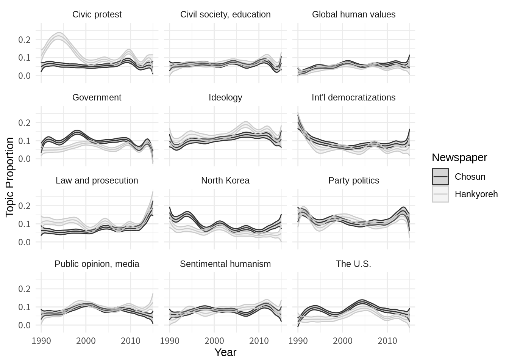
# dev.off()Plot only selected topic prevalences by time.
# plot interaction effects
# pdf("topics_6.pdf", width = 6, height = 3)
effects_int %>%
mutate(label = case_when(
topic == 1 ~ "Ideology",
topic == 2 ~ "Civil society, education",
topic == 3 ~ "Public opinion, media",
topic == 4 ~ "North Korea",
topic == 5 ~ "Party politics",
topic == 6 ~ "Law and prosecution",
topic == 7 ~ "The U.S.",
topic == 8 ~ "Government",
topic == 9 ~ "Sentimental humanism",
topic == 10 ~ "Int'l democratizations",
topic == 11 ~ "Civic protest",
topic == 12 ~ "Global human values"
)) %>%
filter(topic == c(11,1,6,5,9,2)) %>%
filter(moderator != "Hankook") %>%
mutate(value = as.Date(value, origin = '1990-01-01')) %>%
mutate(moderator = as.factor(moderator)) %>%
ggplot(aes(x = value, y = proportion, color = moderator,
group = moderator, fill = moderator)) +
geom_line() +
geom_ribbon(aes(ymin = lower, ymax = upper), alpha = 0.2) +
theme_minimal() +
labs(x = 'Year (1990-2014)', y = 'Topic Proportion',
# title = "Frame: Ideology and ideals",
color = 'Newspaper', group = 'Newspaper', fill = 'Newspaper') +
# scale_x_date(date_breaks = "2 years", date_labels = "%Y") +
# theme(axis.text.x = element_text(angle = 90, vjust = 0.5, hjust=1)) +
facet_wrap(~label, ncol = 3) +
scale_fill_grey() +
scale_colour_grey()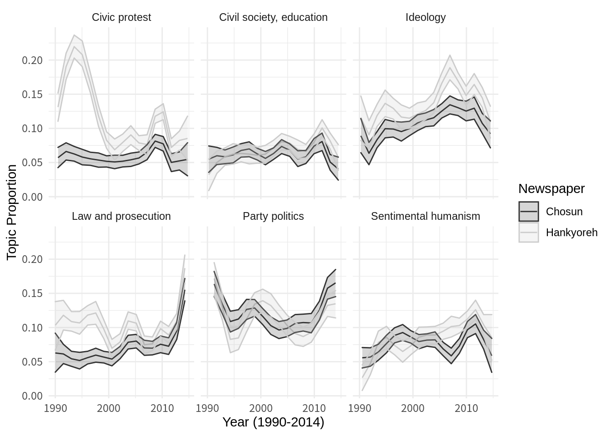
# dev.off()Estimate effects without smoothing lines.
prep_point <- estimateEffect(1:12 ~ Newspaper * Days,
topic_model, covariates)Plot relationship between newspapers and topics, but this time I sorted the topics manually by order.
# pdf("meta_cov_linear.pdf", width = 6, height = 5)
par(mar=c(4,7,1,1))
plot(prep_point, covariate = "Newspaper",
topics = c(11,1,6,3,9,2,5,12,10,8,4,7),
model = topic_model,
method = "difference", cov.value1 = "Chosun",
cov.value2 = "Hankyoreh",
xlab = "More like Hankyoreh ... More like Chosun",
labeltype = "custom", custom.labels = c("Civic protest",
"Ideology",
"Law and prosecution",
"Public opinion, media",
"Sentimental humanism",
"Civil society, education",
"Party politics",
"Global human values",
"Int'l democratizations",
"Government",
"North Korea",
"The U.S."
))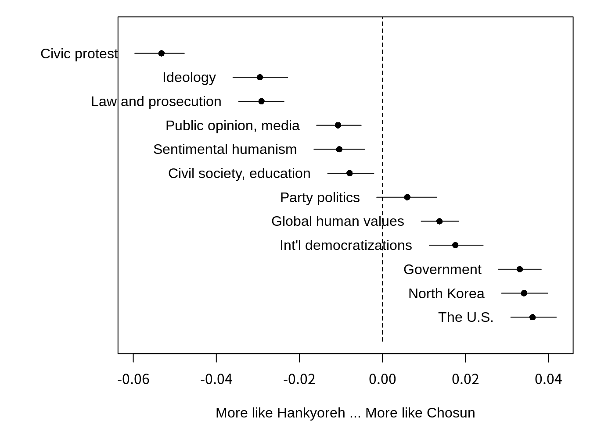
# dev.off()Plot topic prevalences by time, without smoothing lines.
# prepare dataframe with the package stm_insights
effects_point <- get_effects(estimates = prep_point,
variable = 'Days',
type = 'continuous',
moderator = 'Newspaper',
modval = "Chosun") %>%
bind_rows(get_effects(estimates = prep_point,
variable = 'Days',
type = 'continuous',
moderator = 'Newspaper',
modval = "Hankyoreh"))
labels <- c("Chosun" = "Conservative", "Hankyoreh" = "Liberal")
yearseq <- seq(from = ymd("19900101"),
to = ymd("20141230"), by = "year")
yearnames <- year(yearseq)
effects_point %>%
mutate(label = case_when(
topic == 1 ~ "Ideology",
topic == 2 ~ "Civil society, education",
topic == 3 ~ "Public opinion, media",
topic == 4 ~ "North Korea",
topic == 5 ~ "Party politics",
topic == 6 ~ "Law and prosecution",
topic == 7 ~ "The U.S.",
topic == 8 ~ "Government",
topic == 9 ~ "Sentimental humanism",
topic == 10 ~ "Int'l democratizations",
topic == 11 ~ "Civic protest",
topic == 12 ~ "Global human values"
)) %>%
# filter(topic == c(1,2,4,6,9,11)) %>%
filter(moderator != "Hankook") %>%
mutate(value = as.Date(value, origin = '1990-01-01')) %>%
mutate(moderator = as.factor(moderator)) %>%
ggplot(aes(x = value, y = proportion, color = moderator,
group = moderator, fill = moderator)) +
geom_line() +
geom_ribbon(aes(ymin = lower, ymax = upper), alpha = 0.2) +
theme_minimal() +
labs(x = 'Year', y = 'Topic Proportion',
# title = "Frame: Ideology and ideals",
color = 'Newspaper', group = 'Newspaper', fill = 'Newspaper') +
# scale_x_date(date_breaks = "3 years", date_labels = "%Y") +
# theme(axis.text.x = element_text(angle = 90, vjust = 0.5, hjust=1)) +
facet_wrap(~label, ncol = 3) +
scale_fill_grey() +
scale_colour_grey()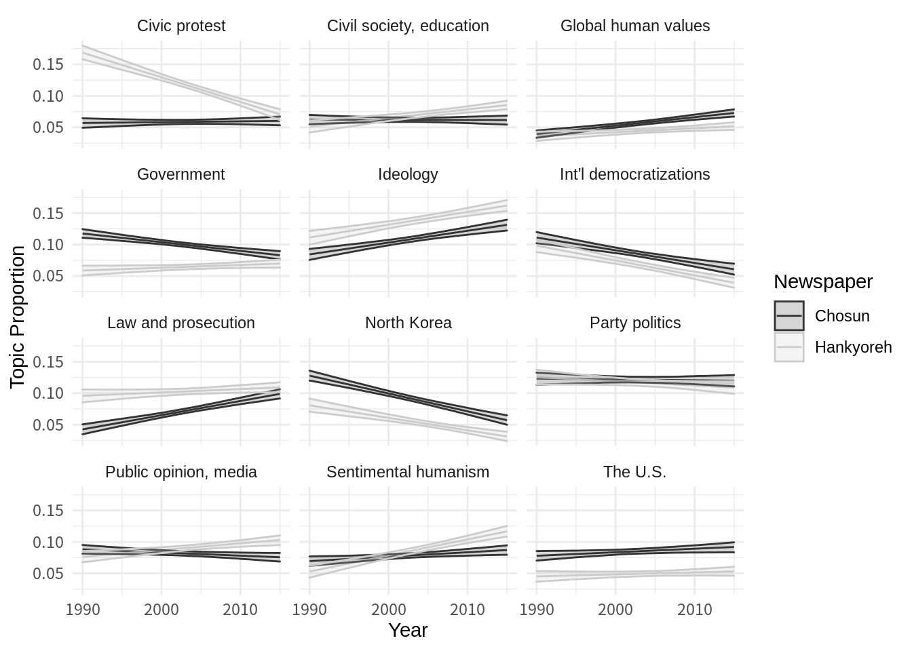